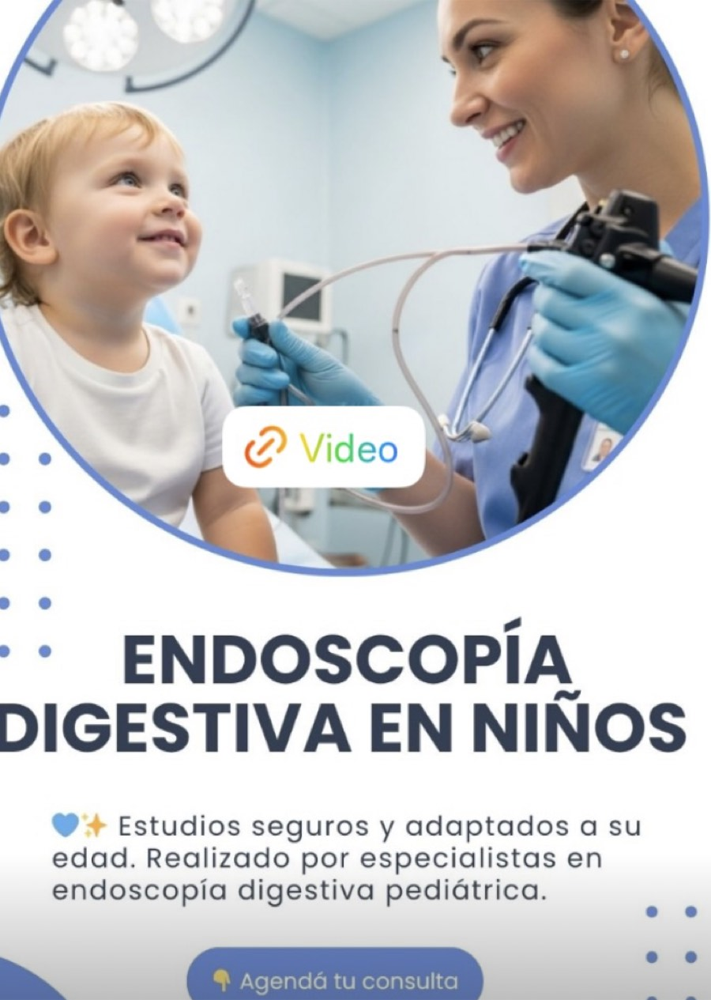
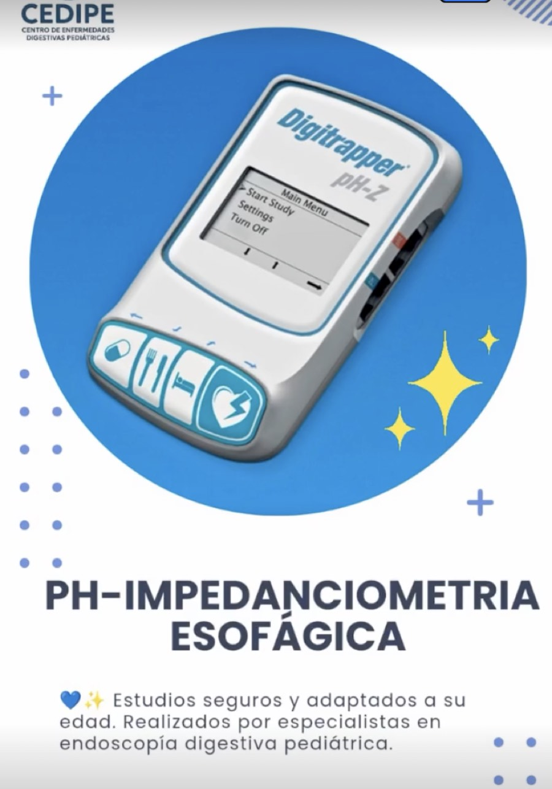
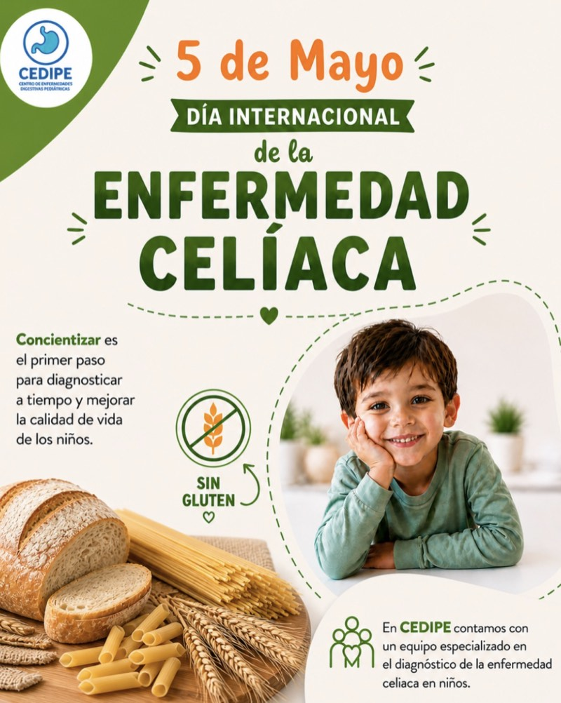

Endoscopía digestiva pediátrica
Estudios seguros y adaptados a cada edad, realizados por especialistas en endoscopía digestiva pediátrica.
En CEDIPE somos un equipo especializado en gastroenterología, hepatología y nutrición pediátrica. Acompañamos el diagnóstico, tratamiento y seguimiento de enfermedades digestivas en niños y adolescentes, con profesionales habilitados por el MSP.
Contamos con consultas y estudios orientados al diagnóstico, tratamiento y seguimiento de enfermedades digestivas en niños y adolescentes. Incorporamos herramientas diagnósticas de última generación, como la manometría anorrectal de alta resolución y la cápsula endoscópica pediátrica.

Estudios seguros y adaptados a cada edad, realizados por especialistas en endoscopía digestiva pediátrica.

Evaluación del reflujo gastroesofágico con tecnología específica para estudios funcionales digestivos.
Atención especializada para el diagnóstico y seguimiento de enfermedades digestivas en niños y adolescentes.
Una cápsula muy pequeña con cámara recorre el intestino delgado y explora zonas antes inaccesibles sin cirugía.
Aporta información sobre el funcionamiento de la defecación, clave para tratamientos más precisos y personalizados.
Procedimiento diagnóstico especializado dentro de la evaluación digestiva pediátrica.
Procedimiento diagnóstico especializado dentro de la evaluación hepática pediátrica.
💙 En CEDIPE cuidamos la salud digestiva de niños y adolescentes con atención especializada, segura y realizada por profesionales habilitados por el MSP para la atención y estudios digestivos en edad pediátrica.
CEDIPE es un centro especializado en gastroenterología, hepatología y nutrición pediátrica en Montevideo. Nuestro equipo está enfocado en el diagnóstico y seguimiento integral de enfermedades digestivas en niños y adolescentes, incorporando de forma constante nuevas herramientas diagnósticas para ampliar la evaluación en la edad pediátrica.
Todos los procedimientos son realizados por profesionales habilitados por el MSP para la atención y estudios digestivos en edad pediátrica, con una atención segura, cercana y adaptada a cada niño.
Conocé más en InstagramAlgunos motivos de consulta frecuentes y señales de alarma a tener en cuenta. Ante cualquiera de estos signos, te recomendamos consultar a tiempo.
El estreñimiento en niños es muy frecuente y, en la gran mayoría de los casos, se trata de estreñimiento funcional, sin una enfermedad intestinal de base. Suele originarse por evacuaciones dolorosas que llevan a retención voluntaria, cambios de rutina, baja ingesta de agua y fibra, y poca actividad física.
🚩 Consultá si: inicia en los primeros meses de vida, hay vómitos biliosos, distensión abdominal marcada, sangrado con las evacuaciones, falta de crecimiento o heces en cinta.

La enfermedad celíaca es una enfermedad autoinmune en la que el consumo de gluten genera una respuesta inmunológica que afecta el intestino. Muchos niños pueden presentar síntomas poco claros o incluso pasar desapercibidos.
🚩 Signos de alerta: dolor o distensión abdominal frecuente, diarrea o estreñimiento persistente, retraso del crecimiento, anemia sin causa clara.
❗ Importante: no retirar el gluten antes de realizar los estudios diagnósticos.
Ocurre cuando el intestino delgado produce una cantidad insuficiente de lactasa, la enzima encargada de digerir la lactosa. Como resultado, la lactosa no digerida se fermenta en el intestino grueso, provocando gases y malestar.
Síntomas frecuentes: dolor o distensión abdominal después de consumir lácteos, gases o cólicos, diarrea o deposiciones blandas, náuseas o sensación de plenitud.
Las EII, como la Enfermedad de Crohn y la Colitis Ulcerosa, son enfermedades crónicas que producen inflamación del intestino y pueden afectar la calidad de vida de niños y adolescentes. Muchas veces los síntomas pueden confundirse con otros problemas digestivos y retrasar el diagnóstico.
🚩 Signos de alerta: dolor abdominal persistente, diarrea prolongada o con sangre, pérdida de peso o falta de crecimiento, cansancio, anemia o decaimiento.
Se considera diarrea crónica cuando las deposiciones líquidas o semilíquidas persisten por más de 4 semanas. Aunque no siempre es grave, requiere evaluación médica para identificar su causa.
🚩 Cuándo consultar: diarrea que dura más de 4 semanas, pérdida de peso o falta de crecimiento, sangre en heces o dolor abdominal persistente, decaimiento o mal estado general.
Es un cuadro funcional y transitorio en bebés menores de 9 meses que aún no coordinan bien el esfuerzo abdominal con la relajación del esfínter: pujan, lloran o se ponen rojos, pero al evacuar las heces son blandas. No requiere tratamiento; el sistema madura solo.
🚩 Consultá si: las heces se vuelven duras, aparece sangre, el bebé se alimenta mal o no gana peso, hay distensión abdominal marcada, o los episodios persisten más allá de lo esperable.
¿Tu hijo/a presenta alguno de estos síntomas?
Agendar consulta
Hospital Italiano
Planta Baja, Consultorio 17
Bv. Artigas 1632, Montevideo, Uruguay
Completá el formulario y te responderemos a la brevedad, o escribinos directamente por WhatsApp.